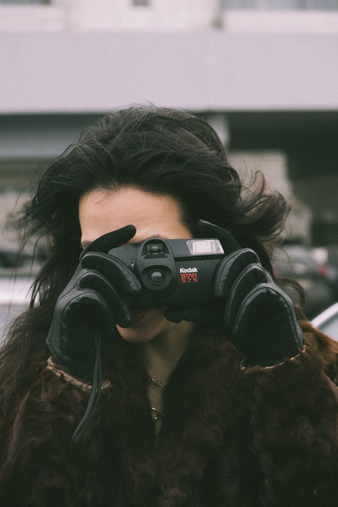

СПБ · КАМЕРАО фотографии
Не постановка, а чувство, которое успели поймать.
Я снимаю так, будто собираю личный фотоальбом: немного воздуха, неровный ветер, взгляд между фразами, руки на холодном металле, свет из окна старой парадной. В Петербурге для меня важны не только известные места — вода, модернистские фасады, дворы, лестницы, вечерняя Петроградка, — но и паузы между ними.
Главное — чтобы спустя годы кадры не выглядели «модно», а ощущались живыми.